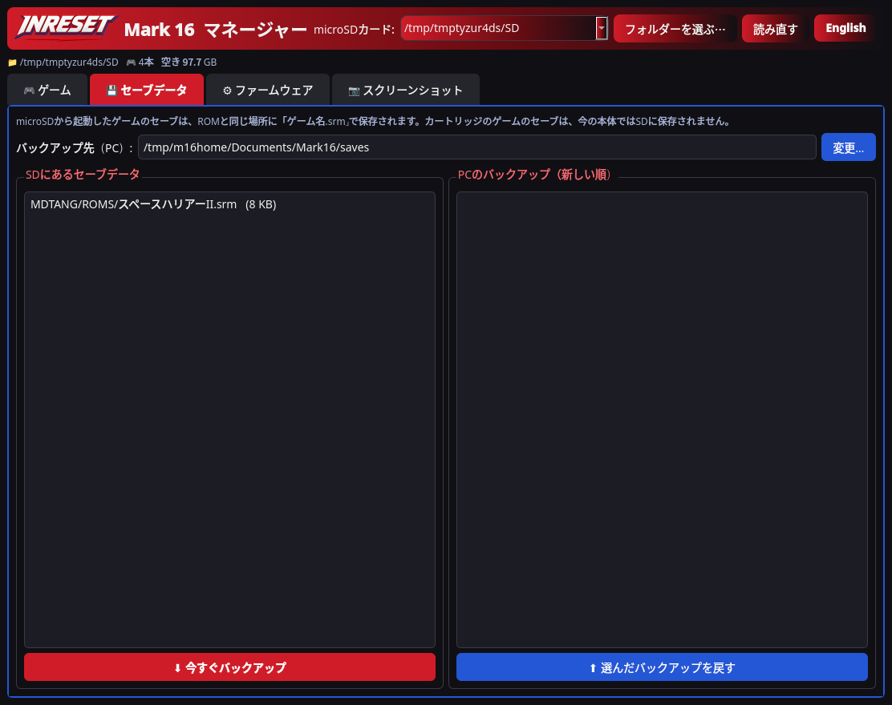
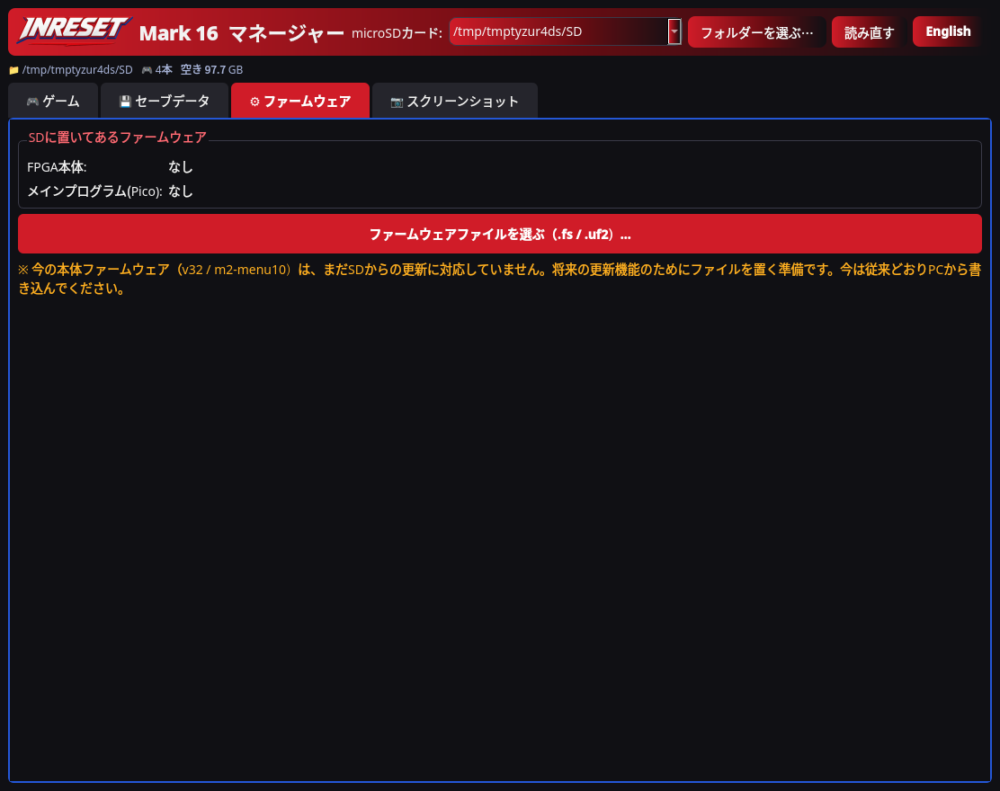

アプリでできること パソコンでカードを整理して、Mark 16に戻すためのアプリです。アプリ自体でゲームを遊んだり、本体と直接通信したりするものではありません。
01 · ゲームを追加・整理 microSDカードのドライブを選び、ゲームのROMファイルを一覧にドラッグ＆ドロップ。「追加」ボタンでも選べます。ファイルは /MDTANG/ROMS にコピーされます。.md・.bin・.gen形式、1本あたり4 MiBまで対応しています。
カード内のゲームを一覧表示。名前の変更や削除もできます。 上下に移動して並び順を保存すると、ファイル名の先頭に番号が付きます。 555本のソフト一覧から、名前・ジャンル・発売元・年の候補を表示します。候補が正しいか確認して使ってください。 開発途中の画面です。v0.1.1と細部が異なる場合があります。日本語のゲーム画面。画像を押すと大きく見られます。表示はデモ用です。ゲームデータや画像は付属しません。 02 · 表示名を編集 ROMのファイル名が、本体メニューの表示名になります。アプリから名前を変えると、関連する紹介文・サムネイルのファイル名も一緒に変わります。ソフト一覧の候補も利用できます。
03 · 日本語・英語の紹介文 2つの言語を別々に編集し、その場で見え方を確認できます。最大4行、日本語は1行12文字、英語は16文字（UTF-8・512バイトまで）。日本語は本体メニューと同じ追い出しの禁則で折り返し、濁点も本体と同じ1文字に数えます。英語は単語の区切りで折り返します。長すぎる文は警告します。
04 · サムネイルを作成 画像を選ぶかドラッグして、メガドライブの512色から選んだ16色の .m16 形式（v2）に自動変換。保存データは96×28ピクセル、本体では96×56で表示します。仕上がりを見ながら、紹介文と一緒に保存できます。以前の4色（672バイト）のサムネイルも読めます。
05 · セーブをバックアップ・復元 カード内の .srm を、パソコンの日時付きフォルダにまとめてバックアップ。SHA-256でコピーを確認します。バックアップを選んでカードへ戻すこともでき、上書き前のセーブは .srm.bak として残します。
カセットのRAMコピー起動で保存した /MDTANG/SAVES/CART_*.srm や、旧形式のROMの隣にあるセーブも対象です。カード上のファイルを扱う機能で、実物のカセットのSRAMを直接読み書きすることはできません。

セーブデータ画面。カセットのセーブを含む実機での動作確認は、これから行います。 06 · ファームウェアを準備 本体の更新は今後対応予定 FPGA用の .fs、Pico用の .uf2 を /MDTANG/FPGA に配置します。ファイル名から分かる版数を記録し、比較できる場合は古い版への変更を警告します。
今できるのは、カードに更新ファイルを置くところまでです。本体がSDカードから更新する機能は未対応です。画面の版数はカード上の情報で、本体に入っている版数を直接確認したものではありません。

ファームウェア準備画面。この操作だけで本体の更新は行われません。 07 · スクリーンショットを書き出し 本体の撮影は今後対応予定 /MDTANG/SHOTS にある対応画像を一覧表示し、PNGにしてパソコンへ保存できます。元の大きさ・2倍を選べます。今後使う予定の .m16s 形式の読み込みにも対応しています。
本体がこの形式で撮影・保存する機能は、まだ未対応です。将来の機能に向けた準備で、今はアプリから本体画面を撮影できません。
開発中のベータ版です。実際のカード・本体での確認はこれから行います。変更前にmicroSDカード全体をバックアップしてください。セーブステート、EEPROMセーブ、カセットの直接起動、実物のカセットとのセーブ転送は、このアプリでは利用できません。
ご自身が利用する権利のあるゲームデータ・画像だけを使ってください。このページではROMを配布していません。